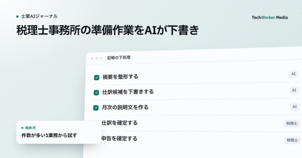
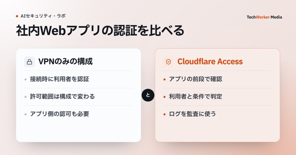

TechWorker Media生成AI活用の実践知
研修の設計、士業の実務、AIインタビュー、セキュリティ。企業で生成AIを使うときに迷いやすい判断を、公式情報や一次資料をもとに整理しています。
新着記事
5つのメディアから、新しく公開した記事

メディアから探す
読む方の仕事に合わせて、5つのメディアに分けています



自社ではどう進めるか、迷ったときに。
TechWorkerは、上場企業を含む37社・2,500名の生成AI活用を支援してきました。活用事例をまとめた資料のお届けや、30分のご相談を承っています。